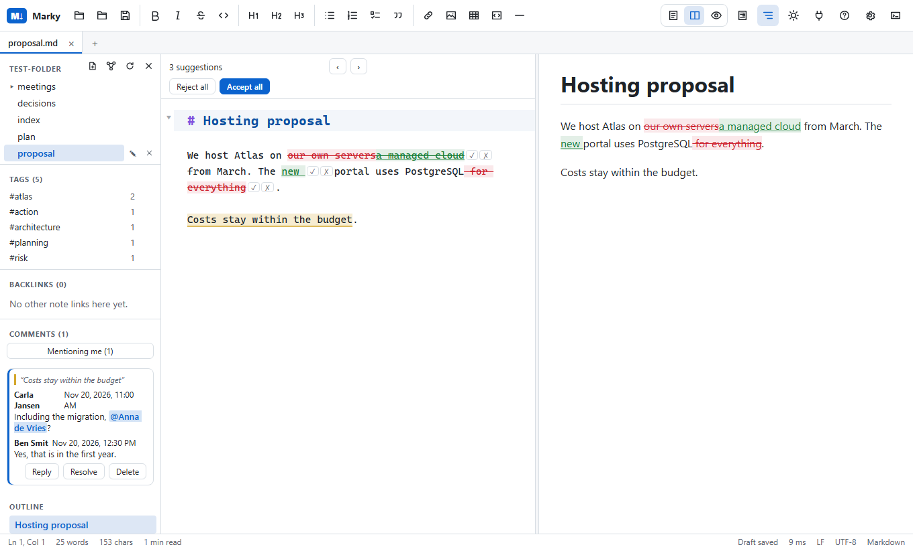
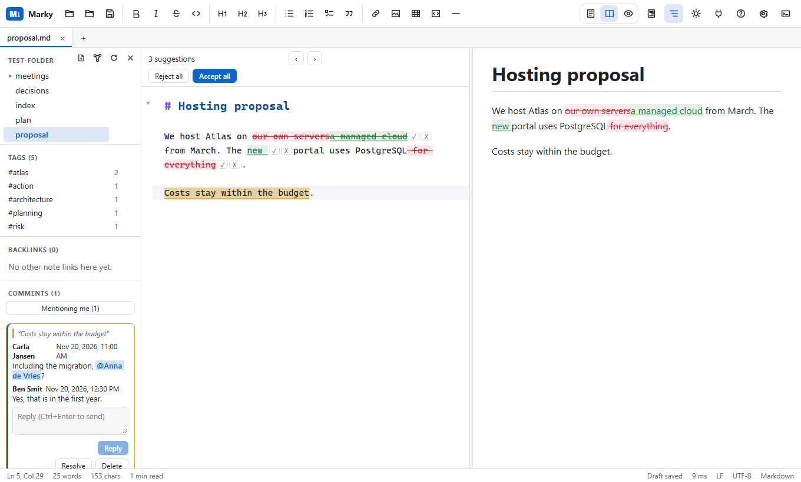
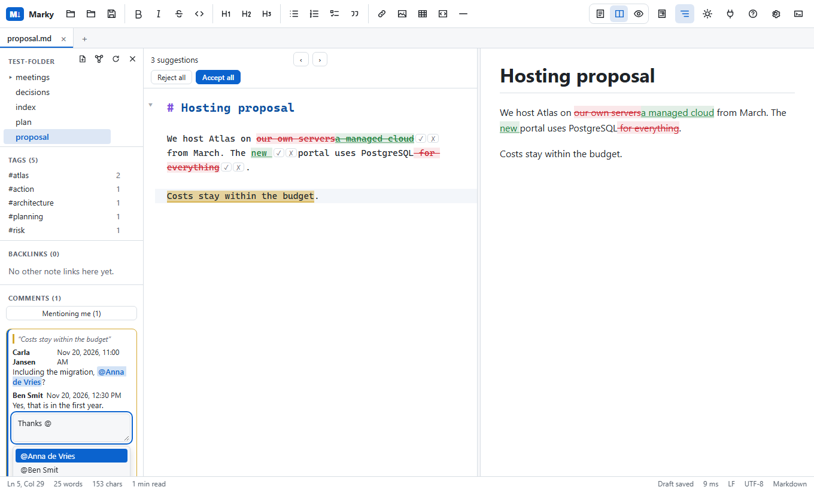

10. Reviewing: suggestions and comments
Two ways to work on a note with others without changing it behind their back: suggest changes they accept or reject, and discuss it in comments. Both work in ordinary notes, in shared notes (Editing together) and in Word round trips.
Suggesting changes (track changes)
Press Ctrl+Alt+T (or Suggest changes (track changes) on/off). The first time Marky asks your name. While Suggest mode is on, the status bar says Suggesting, and:
- what you type shows green and underlined;
- what you delete shows red and struck through;
- hovering shows who suggested it and when.

Accept or reject a suggestion with its ✓ and ✗. The bar above the editor counts the suggestions, moves between them (‹ ›) and has Accept all and Reject all. Ctrl+Z undoes any of it.
In the file, suggestions are CriticMarkup, plain text that survives Git and other editors:
We use PostgreSQL for all services.
added, , `new`, and for who and when. `` shows as 💬, text as a highlight.
When you export a note with suggestions, Marky asks whether to show them, or take them all accepted or all rejected. Word gets real tracked changes.
Comments
Select text and press Ctrl+Alt+N (with nothing selected, the word at the cursor is used). Type your comment in the Comments panel and press Ctrl+Enter.

- The commented text gets a light yellow highlight; click it, or the quote in the panel, to open its thread.
- Reply, Resolve (it's hidden under Show resolved threads), Reopen or Delete. Your own replies have a ×.
- Comments are kept in a file beside the note,
note.md.comments.json(or all together in.marky/comments, Settings › General). The note stays clean Markdown. - When the note changes elsewhere, each comment finds its text again from the words around it. If its text was deleted, the thread moves to Detached instead of disappearing.
- Comments need a note in an open folder.
@mentions
Type @ in a comment or reply and pick someone from the list: the people who commented or suggested in the note, and who's in a shared note with you. ↑ ↓ choose, Enter or Tab picks, Esc closes the list.

- Mentions are coloured; a mention of you stands out and its thread gets a blue edge on the left.
- Mentioning me (N) above the threads shows only the threads that mention you.
- In a shared note, a new comment that mentions you pops up a notice.
Round trips with Word
- Export: Export as Word (.docx) asks whether to include open comments; they become Word comments on the same text, replies as a thread. Suggestions become tracked changes.
- Import: Import Word document (.docx)… turns Word's tracked changes into suggestions and its comments into threads, with replies and resolved state.
So a reviewer who only uses Word can comment and track changes there, and you bring their work back into Marky.